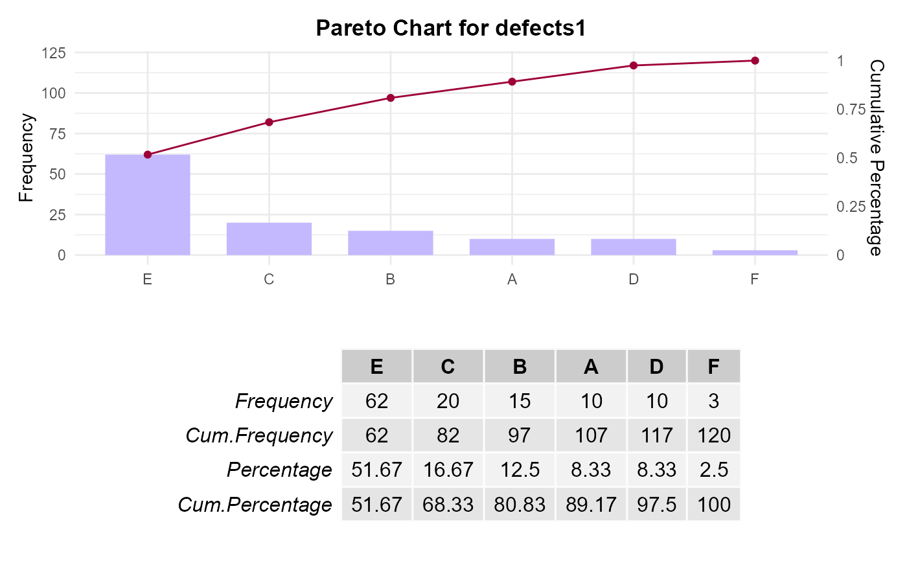
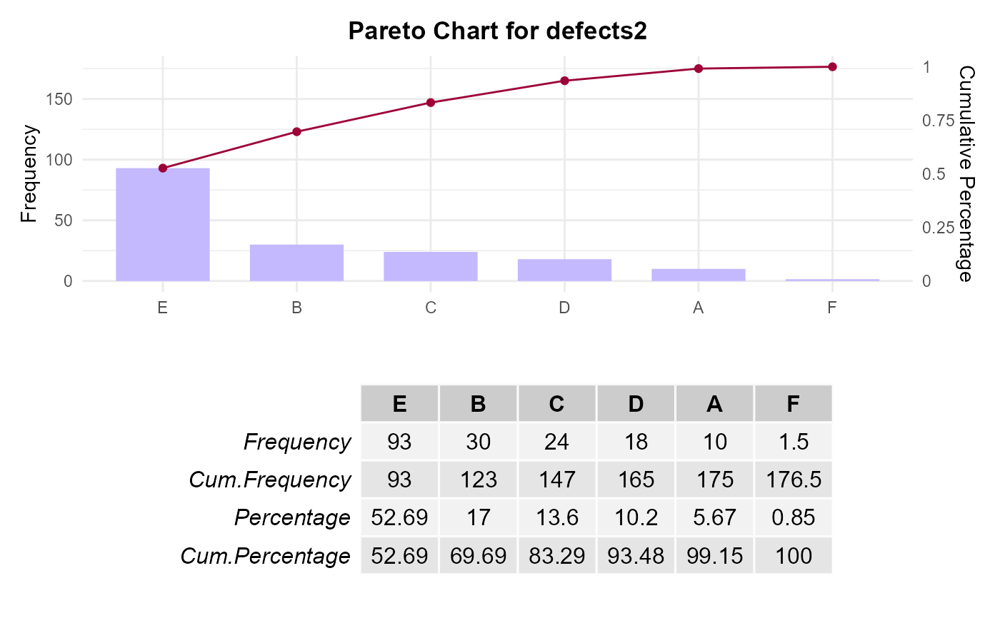

paretoChart.RdFunction to create a Pareto chart, displaying the relative frequency of categories.
paretoChart(
x,
weight,
main,
col,
border,
xlab,
ylab = "Frequency",
percentVec,
showTable = TRUE,
showPlot = TRUE
)A vector of qualitative values.
A numeric vector of weights corresponding to each category in x.
A character string for the main title of the plot.
A numerical value or character string defining the fill-color of the bars.
A numerical value or character string defining the border-color of the bars.
A character string for the x-axis label.
A character string for the y-axis label. By default, ylab is set to "Frequency".
A numerical vector giving the position and values of tick marks for percentage axis.
Logical value indicating whether to display a table of frequencies. By default, showTable is set to TRUE.
Logical value indicating whether to display the Pareto chart. By default, showPlot is set to TRUE.
paretoChart returns a Pareto chart along with a frequency table if showTable is TRUE.
Additionally, the function returns an invisible list containing:
The generated Pareto chart.
A data.frame with the frequencies and percentages of the categories.
# Example 1: Creating a Pareto chart for defect types
defects1 <- c(rep("E", 62), rep("B", 15), rep("F", 3), rep("A", 10),
rep("C", 20), rep("D", 10))
paretoChart(defects1)

# Example 2: Creating a Pareto chart with weighted frequencies
defects2 <- c("E", "B", "F", "A", "C", "D")
frequencies <- c(62, 15, 3, 10, 20, 10)
weights <- c(1.5, 2, 0.5, 1, 1.2, 1.8)
names(weights) <- defects2 # Assign names to the weights vector
paretoChart(defects2, weight = frequencies * weights)
